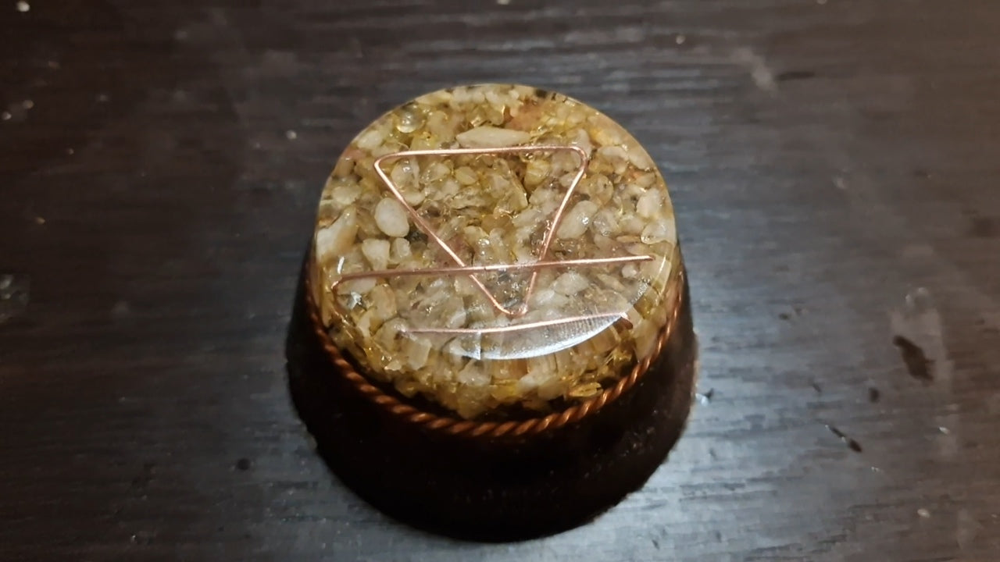
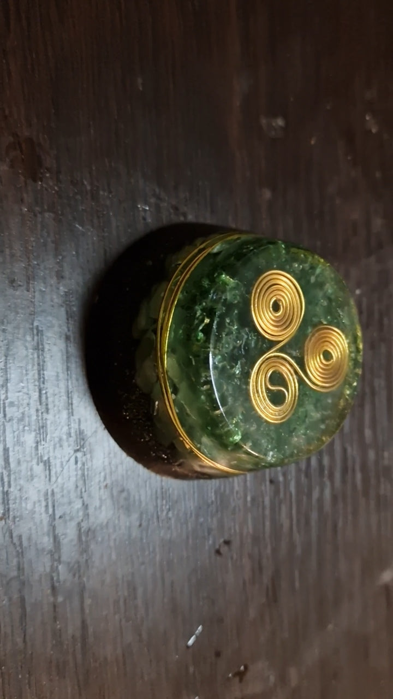
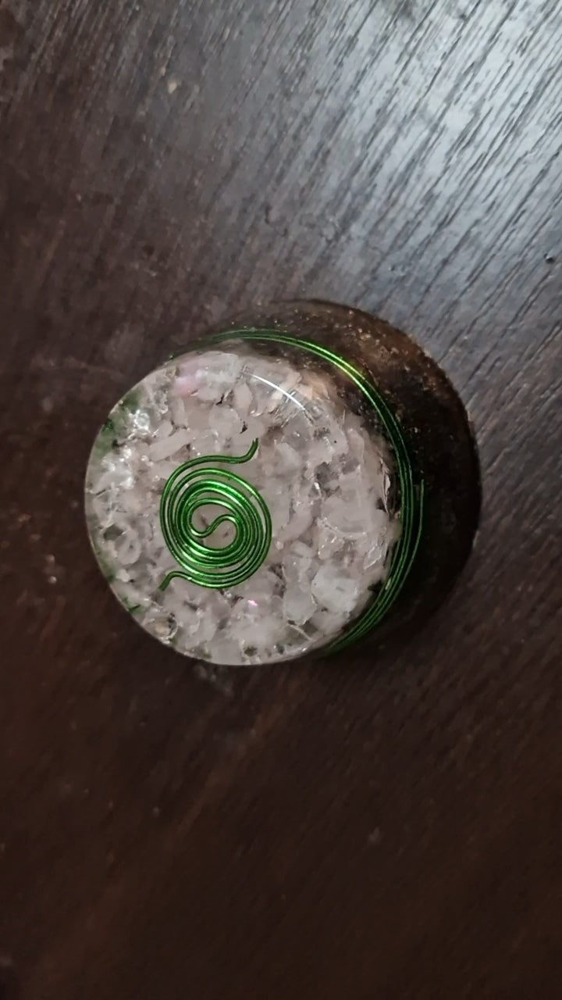
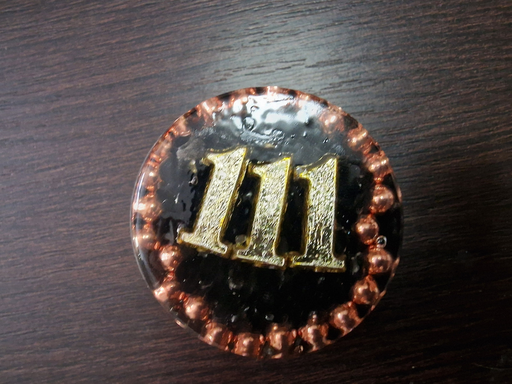

Orgonitok
Térharmonizáló mátrixok, melyek megtisztítják a környezetet és lehorgonyozzák az éltető energiákat.

Gaia Magja
Orgon Generátor
Ezt az orgon generátort úgy készítettem, hogy az anyagok ne külön-külön dolgozzanak, hanem egy közös rendszerként erősítsék egymást.
A középpontban a Lost Cubit tensor gyűrű helyezkedik el, amely a teret finoman tisztítja, tágítja, és segít feloldani a zavaró, szétesett energiákat. Erre a mezőre hangolódik rá a citrin, amely életenergiát, tiszta szándékot és teremtő minőséget hoz be a rendszerbe.
Az egész szerkezetet az alkímiai Föld szimbólum fogja össze. Számomra ez nem díszítés, hanem egy kulcs: segít abban, hogy az energia ne „elszálljon”, hanem lehorgonyzódjon a fizikai térben. Amit ez az eszköz létrehoz, az nem elvont rezgés, hanem stabil, megtartó jelenlét.
Az alsó rétegben lévő nehézfém por és zúzott hegyikristály együtt dolgozik: összegyűjtik a környezeti kaotikus és negatív energiákat, amit a hegyikristály tisztít és rendezett módon továbbítja azokat felfelé a rendszerbe. Így alakul ki egy folyamatos körforgás – befogadás, átalakítás, stabilizálás.
Funkciója: rendbe teszi a teret, földel, nyugtat, és egy olyan alaprezgést hoz létre, ahol könnyebb jelen lenni, alkotni, pihenni vagy akár csak „megérkezni".

Viridis Flux
Orgon Generátor (Víz–Szív–Megújulás)
Ezt az orgon generátort a víz áramló intelligenciájára és a szív természetes regenerációjára hangoltam. A felső rétegben az arany színű triskelioni víz szimbólum vezeti az energiát. Számomra ez a forma az örvénylő mozgást jelenti: amikor az energia nem megreked, hanem folyamatosan tisztul, rendeződik és újraformálódik – ahogyan a víz is teszi a természetben.
A szimbólum alatt zöld lazurit található. Ez az ásvány a belső igazság, az érzelmi tisztaság és a szívből fakadó őszinte jelenlét köve. Segít összehangolni az érzelmeket és a tudatos megértést, így a szív nem elnyomott, de nem is túlterhelt állapotban működik.
Alatta zöld aventurin dolgozik tovább. Az aventurin a megújulás, regeneráció és a természetes életenergia kristálya. Támogatja a szívteret, miközben segít oldani a régi feszültségeket, és teret ad az új ciklusoknak.
Az alsó rétegben lévő fém por és zúzott hegyikristály biztosítja, hogy ez a finom, áramló szívminőség stabilan jelen maradjon a térben. A fémek összegyűjtik és földelik az energiát, a hegyikristály pedig tisztán közvetíti és visszaforgatja azt a rendszerbe.
Funkciója: lágy, mégis rendezett teret hozzon létre, ahol az érzelmek szabadon áramolhatnak, a szív megnyugszik, és a megújulás természetes módon indul el. Nem erőltet, nem irányít — egyszerűen emlékeztet arra, hogyan működik az élet, amikor hagyjuk áramolni.

A szeretet egyensúlya
Orgon Generátor
Ezt az orgon generátort a szív terére és az érzelmi egyensúlyra hangoltam. A felső rétegben rózsakvarc kapott helyet, amely számomra a szeretet, az elfogadás és az érzelmi gyógyulás kristálya. Lágy, mégis mély rezgést hordoz, amely segít megnyitni a szívteret anélkül, hogy túlterhelne.
A rózsakvarc tetején megjelenő triskelioni yin–yang spirál az érzelmek kettősségét és körforgását jelképezi: adás és befogadás, sebezhetőség és erő, női és férfi minőség egyensúlyát. Ez a forma számomra azt üzeni, hogy a szív akkor stabil, ha nem zár el, de nem is árad túl — hanem ritmusban marad.
Az alsó rétegben lévő fém por és zúzott hegyikristály gondoskodik arról, hogy ez a finom érzelmi minőség ne lebegjen el. A fémek összegyűjtik és lehorgonyozzák az energiát, míg a hegyikristály tisztán továbbítja és visszaforgatja azt a rendszerbe.
Funkciója: megnyugtatja a szívteret, oldja a belső feszültségeket, és olyan légkört teremt, ahol könnyebb kapcsolódni — önmagunkhoz és másokhoz is.

111 Kapu
Orgon Generátor (Tudatindító Kód)
Ezt az orgon generátort a 111-es angyal kód minőségére hangoltam, amely számomra az ébredést, az új ciklus kezdetét és a tiszta szándék fókuszát jelenti. A 111 nem csak jel, hanem emlékeztető: amikor megjelenik, ideje tudatosan irányba állni.
A kód alatt apró fekete obszidián helyezkedik el. Ez az ásvány segít felszínre hozni és elnyelni a mélyebb, rendezetlen vagy elfojtott energiákat, miközben védelmet ad a külső hatásokkal szemben. Alatta zúzott hegyikristály dolgozik önmagában: tisztít, rendez és továbbít, mintha átszűrné mindazt, ami már nem szolgál.
Az alsó rétegben lévő fém por és hegyikristály keveréke az átalakítás tere. Ez a rész gyűjti össze a kaotikus, szétesett energiákat, majd a hegyikristály segítségével rendezett, harmonikus minőségbe fordítja át őket. Így az egész rendszer nem elnyom, hanem transzformál.
Funkciója: segítsen tiszta irányba állni, lezárni a régi mintákat, és teret nyitni egy új, tudatosabb szakasznak.